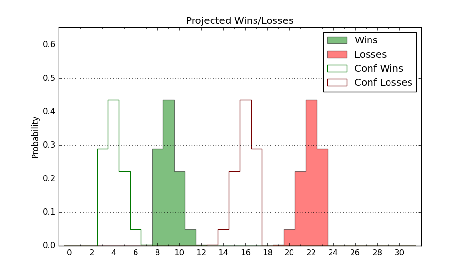

| Home | Game Probabilities | Conferences | Preseason Predictions | Odds Charts | NCAA Tournament |
| City: | Ann Arbor, Michigan | |
| Conference: | Big Ten (14th)
| |
| Record: | 3-13 (Conf) 8-19 (Overall) | |
| Ratings: | Comp.: 7.0 (108th) Net: 7.0 (109th) Off: 111.9 (77th) Def: 104.9 (166th) SoR: 0.0 (139th) |
| Remaining | ||||||
|---|---|---|---|---|---|---|
| Date | Opponent | Win Prob | Pred. | |||
| 2/25 | Purdue (2) | 10.8% | L 71-85 | |||
| 2/29 | @ Rutgers (94) | 30.7% | L 65-71 | |||
| 3/3 | @ Ohio St. (66) | 21.9% | L 69-78 | |||
| 3/10 | Nebraska (42) | 40.4% | L 74-76 | |||
| Previous | Game Score | |||||
| Date | Opponent | Win Prob | Result | Off | Def | Net |
| 11/7 | UNC Asheville (158) | 77.5% | W 99-74 | 21.3 | -0.8 | 20.5 |
| 11/10 | Youngstown St. (136) | 72.7% | W 92-62 | 6.0 | 23.4 | 29.4 |
| 11/13 | @St. John's (46) | 18.0% | W 89-73 | 23.6 | 14.7 | 38.4 |
| 11/17 | Long Beach St. (166) | 78.7% | L 86-94 | -6.3 | -24.2 | -30.6 |
| 11/22 | (N) Memphis (80) | 39.8% | L 67-71 | -13.0 | 9.5 | -3.6 |
| 11/23 | (N) Stanford (102) | 48.3% | W 83-78 | 10.8 | 4.3 | 15.2 |
| 11/24 | (N) Texas Tech (28) | 23.0% | L 57-73 | -12.7 | 4.5 | -8.2 |
| 12/2 | @Oregon (64) | 21.6% | L 83-86 | 9.4 | -4.7 | 4.7 |
| 12/5 | Indiana (100) | 62.6% | L 75-78 | -10.7 | -1.9 | -12.6 |
| 12/10 | @Iowa (48) | 18.5% | W 90-80 | 15.6 | 14.1 | 29.6 |
| 12/16 | Eastern Michigan (334) | 95.5% | W 83-66 | 0.2 | -5.1 | -4.8 |
| 12/19 | (N) Florida (35) | 24.0% | L 101-106 | 0.9 | 6.6 | 7.5 |
| 12/29 | McNeese St. (60) | 47.3% | L 76-87 | -6.7 | -12.0 | -18.7 |
| 1/4 | Minnesota (71) | 51.7% | L 71-73 | -1.3 | -9.1 | -10.4 |
| 1/7 | (N) Penn St. (84) | 41.0% | L 73-79 | -5.5 | -1.3 | -6.8 |
| 1/11 | @Maryland (59) | 20.8% | L 57-64 | -10.9 | 7.0 | -3.9 |
| 1/15 | Ohio St. (66) | 48.8% | W 73-65 | -2.4 | 13.0 | 10.6 |
| 1/18 | Illinois (14) | 23.1% | L 73-88 | -3.0 | -10.0 | -13.0 |
| 1/23 | @Purdue (2) | 3.4% | L 67-99 | 2.2 | -9.9 | -7.7 |
| 1/27 | Iowa (48) | 43.7% | L 78-88 | 1.7 | -9.9 | -8.2 |
| 1/30 | @Michigan St. (19) | 10.2% | L 62-81 | 10.1 | -13.6 | -3.5 |
| 2/3 | Rutgers (94) | 60.2% | L 59-69 | -15.5 | -4.0 | -19.5 |
| 2/7 | Wisconsin (22) | 28.8% | W 72-68 | -0.3 | 17.4 | 17.1 |
| 2/10 | @Nebraska (42) | 16.6% | L 59-79 | -8.8 | -6.9 | -15.7 |
| 2/13 | @Illinois (14) | 8.1% | L 68-97 | -3.9 | -14.2 | -18.1 |
| 2/17 | Michigan St. (19) | 27.8% | L 63-73 | -17.4 | 14.9 | -2.6 |
| 2/22 | @Northwestern (50) | 18.9% | L 62-76 | 2.9 | -10.0 | -7.1 |
| Stats & Trends | |||||
|---|---|---|---|---|---|
| Current | Day | Week | Month | Season | |
| Composite | 7.0 | -0.1 | -0.4 | -2.5 | -6.8 |
| Comp Rank | 108 | +1 | -3 | -20 | -56 |
| Net Efficiency | 7.0 | -0.1 | -0.4 | -2.2 | -- |
| Net Rank | 109 | -- | -4 | -17 | -- |
| Off Efficiency | 111.9 | -0.0 | -0.2 | -1.8 | -- |
| Off Rank | 77 | +2 | -3 | -31 | -- |
| Def Efficiency | 104.9 | -0.1 | -0.2 | -0.5 | -- |
| Def Rank | 166 | -- | +3 | +3 | -- |
| SoS Rank | 1 | -- | -- | +1 | -- |
| Exp. Wins | 9.0 | +0.0 | -0.3 | -2.2 | -6.0 |
| Exp. Conf Wins | 4.0 | +0.0 | -0.3 | -2.2 | -4.2 |
| Conf Champ Prob | 0.0 | -- | -- | -- | -1.3 |

| Advanced Stats | ||
|---|---|---|
| Stat | Value | Rank |
| Off Eff FG % | 0.555 | 41 |
| Off Ast Ratio | 0.149 | 124 |
| Off ORB% | 0.317 | 71 |
| Off TO Rate | 0.154 | 216 |
| Off FT Ratio | 0.364 | 93 |
| Def Eff FG % | 0.486 | 108 |
| Def Ast Ratio | 0.124 | 54 |
| Def ORB% | 0.276 | 171 |
| Def TO Rate | 0.130 | 307 |
| Def FT Ratio | 0.262 | 37 |